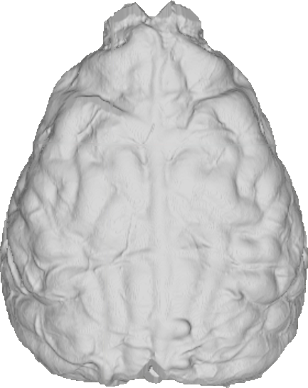
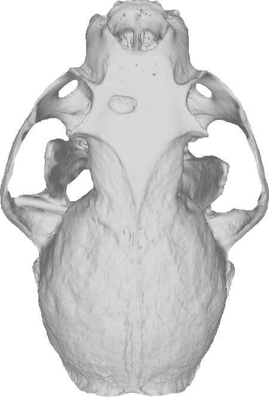
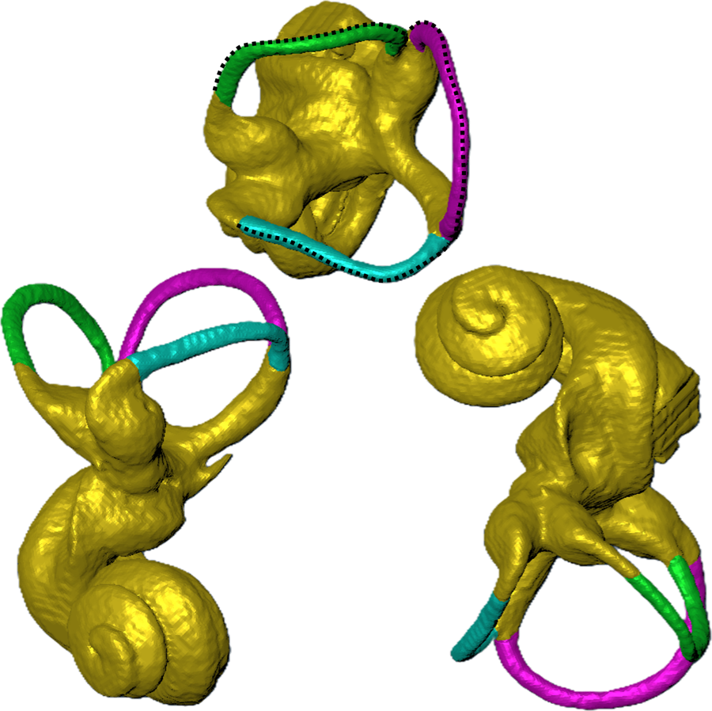
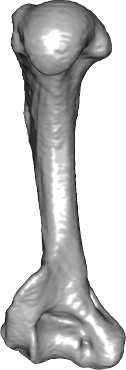

Brain size, diet, and environment in carnivorans
Order Carnivora
We tested whether relative brain volume tracks environmental and dietary variables across carnivorans. The relationships differ among clades.
With Kari Allen
Research
Our projects are organized by the anatomical systems we study. Each project lists its species, people, and related papers or 3D models.

We use virtual endocasts to measure brain size and shape within and across species, and we test how development, genes, and environment shape the central nervous system.
Order Carnivora
We tested whether relative brain volume tracks environmental and dietary variables across carnivorans. The relationships differ among clades.
With Kari Allen
Lontra canadensis
We compare endocranial volume and endocast shape across ecoregions and between the sexes to measure how much the otter brain varies within one species.
With Christopher Heesy, Kari Allen, Haley O'Brien, Ryan Felice; student Kristin Marsh
Neogale vison
We place 48 fixed landmarks on endocasts from specimens across many museum collections to map population-level variation in brain shape.
Badger, pine marten, fisher, raccoon, mink, and ermine
Labeled endocasts let us compare gyri and sulci across musteloids and relate brain anatomy to ecological specialization.
Students Angela Boyer, Blake Andrea, James Bates
Lithobates heckscheri tadpoles, Gambusia affinis, and other Cyprinodontiformes
We test how heavy metals and other teratogens in river systems affect the developing CNS, from tadpole and fish brain shape to the developmental genes PAX6 and BMP4.
With John Phillips and Christopher Heesy; students Megan Hostetter, John Neal, Rafael Rios, Sofia Barajas, Mathew Gross
Lizards and snakes
Relative brain and cerebellum sizes evolved repeatedly alongside shifts in body plan.
With Christopher Heesy

The skull houses the brain and sense organs and anchors the muscles of feeding and expression. We study its shape, its sexual dimorphism, and the muscles that attach to it.
Lontra canadensis
Wild river otters serve as a model of sexual size and shape dimorphism in the skull and brain. The work also develops segmentation methods for highly fused cranial anatomy.
With Christopher Heesy; student Kristin Marsh
Lycaon pictus
Dissections show how the jaw, facial, and ear muscles of this hypercarnivore reflect its diet and highly social hunting.
With Heather Smith
Family Mustelidae
We compare cranial muscles between two mustelid species to link functional morphology with ecology.
Students James Bates, Blake Andrea

The bony labyrinth governs balance, spatial orientation, and hearing. We use it to ask how environment and behavior shape a sensory system within a single species.
Lontra canadensis
We established the river otter as a model for how environment influences the morphology of the inner ear within a species.
With Celeste Delap and Heather Smith; students Hansan Jones, Erika Tanquilut
Lontra canadensis
We test whether the semicircular canals differ between male and female river otters.
Students Erika Tanquilut, Hansan Jones
Lontra canadensis
We measure how the orientation of the orbits and semicircular canals varies among individuals.
Led by Dominik Valdez, with Christopher Heesy; student Austin Bay
Neogale vison
We use 3D landmarks to test whether inner ear shape tracks climate, watersheds, and water conditions across the species' range.

Limbs record how animals move through their habitats. We study limb shape across climates, glacial history, and environmental contamination.
Martes americana/M. caurina
Limb skeletal shape in pine martens correlates with biome and climate.
Martes americana/M. caurina
Limb shape diverged in a punctuated pattern alongside Pleistocene glacial cycles, and a fossil-calibrated phylogeny dates the split between the two species.
With Ryan Felice and Haley O'Brien
Lontra canadensis
We test for directional asymmetry in otter limb bone shape.
Led by Dominik Valdez
Lontra canadensis
We compare forelimb shape and robusticity between otters from different climates and geographic regions.
With Andrew Lee and Brandon Vera Covarrubias
Lontra canadensis
We test how heavy metal exposure affects bone porosity and other bone properties in river otters.
Student Jonathan Tuscano
With colleagues and osteopathic medical students at Midwestern University, we document anatomical variation in human body donors and its clinical implications.
Human body donors
We investigate dominance in coronary artery branching and patterns of cardiac venous drainage.
With Terrence Ritzman, Tim Campbell, and Heather Smith
Human body donors
Case studies describe variation in the lateral femoral cutaneous nerve, the distal iliopsoas tendon, and the thyroid region.
We develop and test the imaging methods our work depends on, so that CT data from museum specimens stay robust, reproducible, and reusable.
Fixed museum specimens
Buffered Lugol's iodine, used for contrast-enhanced CT, preserves DNA fragment lengths in fixed specimens.
With Paul Gignac
Lithobates heckscheri
We assess how staining specimens more than once affects the integrity of microCT data.
Student Megan Hostetter
CT bone segmentation
We compared 2D and 3D segmentation quality of BONe, a one-shot deep learning network.